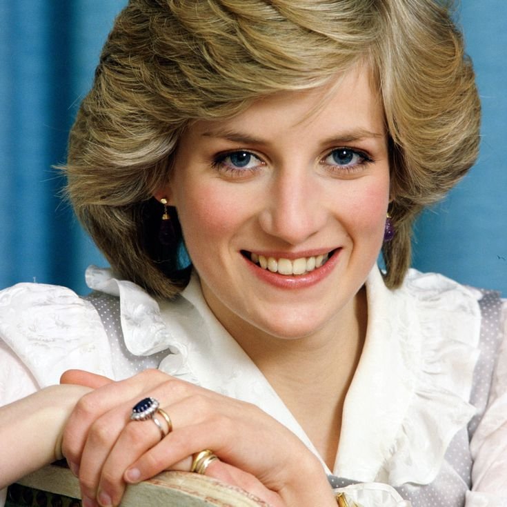

Voice coach Stewart Pearce, who worked with the princess until her death in 1997, reflects on his client’s spirituality, empathy, and the connections she would have with Harry and Meghan.
Stewart Pearce : She was right in my face, this beautiful, beautiful being, these extraordinary eyes. I mean, she was extraordinary and I said, “Well I’m a bit on the spot, but I feel that the way that I can serve you best is if our relationship is completely confidential.” She was still surrounded by a circus, and she was just getting out of it. She had just done the Martin Bashir interview, and when she saw herself on screen and didn’t really like what she saw, she knew she could do better. That was the premise, but because I work very holistically, we got stuck to one another for two years.